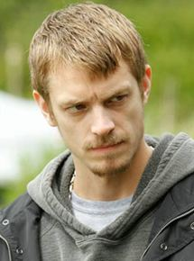

| Atividade | Ator |
|---|---|
| Nome de nascimento | Charles Joel Nordström |
| Nacionalidade | Sueco |
| Nascimento | 25 de novembro de 1979 (Estocolmo, Suécia) |
| Idade | 38 anos |
Nascido e criado em Estocolmo, Suécia, Joel Kinnaman é um cidadão da Suécia e dos Estados Unidos, cortesia de sua mãe sueca e pai americano. Antes de se lançar na carreira de ator profissional, Joel passou um de seus anos de ensino médio no Texas como parte de um programa de intercâmbio estudantil.
Depois de se formar na prestigiosa Acadêmico de Drama Sueca, a carreira de Joel começou em 2002, e ele estrelou em vários filmes suecos, incluindo Arn: The Knight Templar (2007) e sua sequência em 2008, Arn: The Kingdom at the End of the Road. Joel estrelou com sucesso em seis filmes da série de filmes Johan Falk como Frank Wagner, um papel que lhe rendeu uma indicação ao Prêmio Guldbagge de Melhor Ator Coadjuvante. Em 2010, Joel atraiu a atenção internacional como Johan Westlund em Snabba cash (Easy Money), que foi o primeiro filme de uma trilogia de sucesso que passou a se tornar o filme sueco de maior bilheteria de todos os tempos. Não muito tempo depois, ele contratou um agente de alto perfil dos EUA, que teve clientes como Johnny Depp.
Joel foi um dos principais candidatos para Thor (2011) e Mad Max: Estrada da Fúria (2015), mas ele acabou perdendo os papéis para Chris Hemsworth e Tom Hardy, respectivamente.
Embora Joel não tenha conseguido os papéis principais que ele estava em busca, o burburinho em torno das notícias sobre os filmes, foi o suficiente para dar-lhe a exposição em solo americano. Toda essa atenção lhe rendeu papéis em A Hora da Escuridão (2011), estrelado por Emile Hirsch e Max Minghella e Millennium: Os Homens que Não Amavam as Mulheres ao lado de Daniel Craig e Rooney Mara. Com uma impressionante coleção de filmes suecos em seu currículo, Joel estava sedento por mais reconhecimento nos Estados Unidos. Sua ambição o fez conseguir o papel do policial que virou cyborg, Alex Murphy, no remake de RoboCop de 2014.
Além de filmes de longa metragem, Joel Kinnaman já atuou na TV sueca e americana como em Andra Avenyn e a série do canal AMC The Killing. Mais recentemente, ele estrelou em Noite Sem Fim (2015) e Crimes Ocultos (2015) ao lado de Tom Hardy.
O ator está atualmente filmando seu próximo projeto, Altered Carbon, no papel de Takeshi Kovacs, que estreou em 2018 no Netflix.